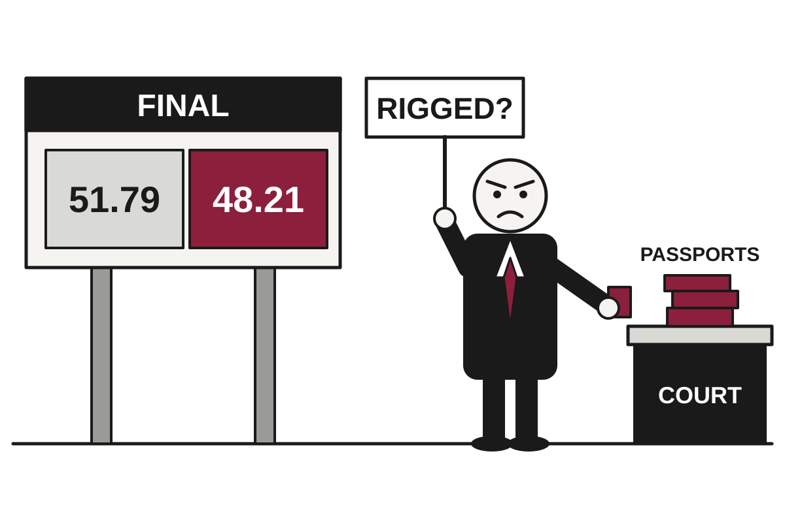

5 Things in 60 Seconds
- Brazil's Lula won a fourth term with 51.79% to 48.21% over Flávio Bolsonaro, whose party accepted the result while he did not, and who has so far conceded only his passports.
- Israelis voted in record numbers, but polls show neither Netanyahu's bloc nor Eisenkot's reaching the 61 seats needed, so the real contest will be weeks of coalition haggling.
- Anthropic filed for an IPO showing $16.3 billion in first-half revenue and an $80.7 billion net loss, mostly noncash debt adjustments, which is a loss that exists chiefly in spreadsheets.
- Microsoft is offering voluntary exit packages to up to 60,000 employees in four countries, which is a layoff where the employee holds the pen.
- A New Mexico judge ordered Meta to pay $25 billion over misleading users about data protection, topping the $17 billion multistate settlement and leaving settling states to check their receipts.

Brazil Declares Lula Winner, Loser Declines to Participate in the Ending
Flávio Bolsonaro lost the runoff 51.79% to 48.21%, and has since surrendered his passports, though not the argument.
The wire said: How Lula beat far-right Bolsonaro in Brazil – The Latest · The Guardian
Brazil's Luiz Inácio Lula da Silva won a fourth term as president, beating the far-right senator Flávio Bolsonaro with 51.79% of the vote to 48.21%, according to The Guardian. The paper notes Lula is the first candidate to win a runoff after losing the first round. Brazil has now completed the democratic part of its election, and is moving on to the part where someone has to agree it happened.
Flávio Bolsonaro has not agreed. NPR reported that his party accepted the result, while he himself would not concede, and that President Trump called the vote "rigged" without offering evidence. Translation: the party has read the electoral court's announcement, the candidate has read it too, and only one of them has decided to treat it as a draft.
Geopolitics

Israelis Vote in Record Numbers to Decide Who Will Spend Weeks Negotiating
Turnout is the highest in decades, but polls show neither Netanyahu's bloc nor Eisenkot's reaching the 61 seats needed for a majority.
Israelis went to the polls on Tuesday in numbers that officials and reporters described as record-setting. According to Israel's Central Elections Committee, quoted by Al Jazeera, almost 45 percent had voted by 2pm, the highest at that hour in 50 years and 6 percent above the same point in 2022. The BBC reported that about 70,000 people had flown home from abroad to vote, which is a lot of airfare spent on a result that may not be known for some time.
Polling published on Friday, per the BBC, shows Netanyahu almost neck-and-neck with Eisenkot, who leads the newly formed Yashar Party. Neither bloc is projected to reach 61 seats, the majority of the 120-seat Knesset. Translation: the voting is the quick part, and the real contest begins afterward, when party leaders spend weeks deciding whom they dislike least.
Russia and Ukraine Pause Shooting Over Oleshky, Thanks to First Lady's Mediation

A limited truce in the occupied Kherson city is meant to let aid in and civilians out on Friday, though almost no one can confirm it is holding.
Serbian Students Win Election, Ending Populist's Decade-Plus Run Without Needing a Single Graduation Ceremony
A student-backed movement has won Serbia's parliamentary election, according to NPR, ending more than a decade of dominance by a Moscow-backed populist leader.
Finland and Norway Phone Putin for 90 Minutes, Agree Mainly to Phone Again

The two Nordic leaders held a rare joint call with the Russian president, with allies notified in advance and Denmark still unimpressed.
Elsewhere on the wire
Lula’s victory echoes across BRICS after fears of a Bolsonaro win Al JazeeraUK sanctions Sudanese military leaders implicated in El Fasher ‘campaign of rape’ The GuardianMyanmar: Is the US undermining the EU's diplomatic blockade? DWDeath toll from attack by gunmen in northeastern Nigeria rises to 62 Al JazeeraUS forces accused of ‘weaponising’ Somalia’s floods by trapping women and children in the path of El Niño The GuardianA 'Green Army' is out to thwart El Niño flooding NPR WorldAI
OpenAI Claims It Disproved a Core Computer Science Idea, Asks Humans to Please Check
The company says its models produced proofs in math, computer science and physics, and has recruited outside experts to decide whether any of it is true.
OpenAI said it has used internal AI models to produce proofs in three fields: a wave-equation conjecture in mathematics, a refutation of the Exponential Time Hypothesis in computer science, and an existence proof for certain quantum field theories in physics. According to The Decoder, the company calls the manuscripts a kind of raw research data that still needs to be understood. This is a modest way to describe a claim that, if correct, would rearrange several textbooks.
The computer science result is the one with the largest blast radius. The Exponential Time Hypothesis, or ETH, says that solving the Boolean satisfiability problem (SAT) in the worst case takes time that grows exponentially as variables are added. Translation: there is no clever shortcut, only faster ways of trying every combination. The Decoder notes that with 100 variables you are already looking at a 31-digit number of possibilities, which is why nobody has been tempted to just wait it out.
Google's Genie 4 Builds Realistic Worlds That Last Two Minutes, Then Forget Them

DeepMind's new world model adds audio, better physics and real-time edits, but it launches only to trusted testers and Ultra subscribers.
Nvidia Invests $3 Billion in Meta, Which Plans to Spend It on Nvidia

The chipmaker is buying into Meta's stock offering as the social media giant seeks up to $95 billion to fund its AI buildout.
Microsoft Invites 60,000 Employees to Leave, Insists This Is Not a Layoff

The company is offering voluntary exit packages to up to 60,000 staff in four countries, months after cutting 4,800 jobs the old-fashioned way.
Elsewhere on the wire
Anthropic’s elaborate plan to keep Wall Street at bay The Verge AIThe Download: Anthropic’s IPO, smarter power grids, and exercise pills MIT Technology ReviewFormer Deepmind researcher thinks AlphaGo's playbook can cure AI hallucinations The DecoderMeta AI director Rohit Patel leaves to take on Microsoft Office and Google Workspace TechCrunch AIFirefox’s Smart Window adds AI form filling and webpage monitoring The Verge AIIndustrial Intelligence: The next growth opportunity for manufacturing MIT Technology ReviewTechnology

Meta Loses $25 Billion in New Mexico, Making Settling States Check Their Receipts
A New Mexico judge's order dwarfs the multistate deal, leaving attorneys general who settled to wonder whether they left money on the table.
A New Mexico judge ordered Meta to pay $25 billion to resolve claims that the company misled users about the 2018 Cambridge Analytica scandal and related incidents, The Verge reported. The figure is larger than the $17 billion multistate settlement announced this summer, which was billed at the time as unprecedented. It appears that unprecedented has a shelf life of a few months.
The order covers millions of violations of New Mexico's unfair practices law, after a jury found Meta had misled users about how it protected their data and policed misinformation and hate speech. Translation: a violation is counted individually, and when a company has a very large number of users, the arithmetic does the rest. In most other states, similar claims were folded into the settlement and resolved for $459 million.
Administration Keeps Secret Surveillance Ruling Secret Until Congress Agrees to Renew Surveillance

Two senators say the government missed its own 180-day deadline to release a FISA court opinion, even as officials ask Congress to renew Section 702 by year's end.
Boston Dynamics Staff Ask Company Not to Sell Robot Dogs to ICE; Company Sells Robot Dogs to ICE

More than 300 employees signed a petition against a $1.3 million contract for four modified Spot robots, but executives say the deal stands and the dogs will not be weaponized.
Apple Updates MacBook Pro, iMac and iPad mini, Charges Extra for the Trackpad

The M6 arrives across the Mac lineup with faster chips, 24-hour battery claims and a $50 fee for a trackpad that used to be free.
Elsewhere on the wire
Anthropic’s elaborate plan to keep Wall Street at bay The VergePolice Are Using AI to Pull over Drivers for 'Suspicious' Behavior Hacker NewsAnthropic's blockbuster share listing - 5 surprising things we now know BBC TechnologyA 28-Year-Old DOGE Operative Gutted USAID. HR Had No Record of Him Working There Hacker NewsSculpture recreates odd optical effects of famed Lycurgus Cup Ars TechnicaFirefox’s Smart Window adds AI form filling and webpage monitoring The VergeMarkets & Economy

U.S. Borrows $2 Trillion a Year, Bond Market Asks for 5.1% and a Plan
A $1.992 trillion deficit, a 5%-plus 10-year yield and a divided Congress on the way leave no obvious exit from the debt problem, CNBC reported.
The federal government ran a deficit of $1.992 trillion in the 2026 fiscal year, Treasury data showed Friday, according to CNBC. That is up 12% from last year and roughly 6.2% of GDP. Treasury Secretary Scott Bessent has said the target should be below 4% by the end of President Trump's term, which CNBC politely describes as something the U.S. has almost no way of hitting.
Meanwhile, the 10-year Treasury yield traded at 5.1% on Friday, up 114 basis points since the end of February. Translation: a basis point is one hundredth of a percentage point, so the government's borrowing cost has risen by about 1.14 percentage points in under eight months. The latest official reading, from Oct. 23, put it at 5.0%.
Several things are pushing yields up. The war with Iran sent oil and diesel prices higher, and bond traders now want extra yield in case central banks, including the Federal Reserve, raise rates. Translation: lenders are charging more now because they expect to be hurt by inflation later. Brent crude was at $115.22 as of Oct. 20, which suggests they have a point.
Boeing Promises to Build Planes Faster Eventually, Investors Hear 'Eventually' and Sell 9%

Boeing says it won't significantly raise 737 Max output until late 2027 because wings are arriving slowly, even as losses narrow and defense sales climb.
Honda Calls 50% Canada Tariff 'Catastrophic,' Hopes Cooler Heads Prevail Before New Year
An American Honda executive warned that doubling duties on Canadian vehicles and parts on Jan. 1 would hurt the entire industry, and asked for a three-country deal instead of two separate ones.
JetBlue Stock Jumps 20% After Airline Promises Profit, Eventually, in Writing

Shares surged after JetBlue set a new profit target and argued its bond selloff doesn't match its earnings, according to MarketWatch and Investing.com.
| Series | Last | Chg | Period | Trend |
|---|---|---|---|---|
| SPY | $769.14 | +0.49% | +4.06% | |
| Nasdaq | 26,169.38 | +0.82% | +4.78% | |
| VIX | 18.39 | −1.06 | −0.28 | |
| Brent crude | $115.22 | −3.03% | +32.45% | |
| Dollar index | 121.32 | −0.03% | +0.62% | |
| 2Y Treasury | 4.69% | +0.04 | +0.38 | |
| 10Y Treasury | 5.00% | +0.04 | +0.33 | |
| Fed Funds | 3.88% | ±0.00 | +0.25 | |
| CPI inflation (YoY) | 3.74% | +0.34 | +1.30 | |
| Unemployment | 4.20% | +0.10 | +0.10 |
Elsewhere on the wire
Poland stocks higher at close of trade; WIG30 up 0.96% Investing.comWhen will Anthropic go public? Here’s what to know about the IPO timeline. MarketWatchDenmark stocks higher at close of trade; OMX Copenhagen 20 up 0.35% Investing.comOracle integrates ChatGPT, Codex into apps and expands cloud chip lineup CNBC MarketsThe U.S. economy is gathering steam. This is the chief reason why. MarketWatchOakley Capital explores sale of Phenna Group testing firm - Bloomberg Investing.comPhoto credits
- Israelis Vote in Record Numbers to Decide Who Will Spend Weeks Negotiating: Ballot box 2024 Swedish EU election at Stångenässkolan, Brastad by W.carter, CC BY-SA 4.0, via Wikimedia Commons
- Russia and Ukraine Pause Shooting Over Oleshky, Thanks to First Lady's Mediation: Landmine warning sign in Croatia by Pertoelum at English Wikipedia, Public domain, via Wikimedia Commons
- Finland and Norway Phone Putin for 90 Minutes, Agree Mainly to Phone Again: Helsinki Presidential Palace 01 by Ad Meskens, CC BY-SA 4.0, via Wikimedia Commons
- Anthropic Files to Go Public, Asks Investors Not to Think Transactionally: NASDAQ Times Square - panoramio by Roman SUZUKI, CC BY 3.0, via Wikimedia Commons
- Google's Genie 4 Builds Realistic Worlds That Last Two Minutes, Then Forget Them: Nintendo-Switch-Pro-Controller-FL by Evan-Amos, Public domain, via Wikimedia Commons
- Nvidia Invests $3 Billion in Meta, Which Plans to Spend It on Nvidia: Data center infrastructure in the United States by DOE/National Renewable Energy Laboratory (NREL), Public domain, via Wikimedia Commons
- Microsoft Invites 60,000 Employees to Leave, Insists This Is Not a Layoff: Everett - Weyerhaeuser Office Building interior 01 by Joe Mabel, CC BY-SA 3.0, via Wikimedia Commons
- Apple's $2,000 Foldable Breaks Early, Which Apple Calls a 'Small Number': Smartphone cracked screen by Sygmoral, CC BY-SA 4.0, via Wikimedia Commons
- Meta Loses $25 Billion in New Mexico, Making Settling States Check Their Receipts: Grimes County Courthouse, Anderson, Texas 1803091224 (39859130205) by Patrick Feller from Humble, Texas, USA, CC BY 2.0, via Wikimedia Commons
- Administration Keeps Secret Surveillance Ruling Secret Until Congress Agrees to Renew Surveillance: Capitol Building Full View by Noclip, Public domain, via Wikimedia Commons
- Boston Dynamics Staff Ask Company Not to Sell Robot Dogs to ICE; Company Sells Robot Dogs to ICE: Big dog military robots by U.S. Marine Corps photo by Lance Cpl. M. L. Meier., Public domain, via Wikimedia Commons
- Apple Updates MacBook Pro, iMac and iPad mini, Charges Extra for the Trackpad: Laptop and small plant on a desk in a modern workspace during daylight hours by Shixart1985, CC BY 2.0, via Wikimedia Commons
- Fed Expected to Do Nothing Loudly, While Declining to Say What It Will Do Next: Eccles Building (26088200676) by Federalreserve, Public domain, via Wikimedia Commons
- U.S. Borrows $2 Trillion a Year, Bond Market Asks for 5.1% and a Plan: Treasury Building (1) by Erich Robert Joli Weber, CC BY-SA 3.0, via Wikimedia Commons
- Boeing Promises to Build Planes Faster Eventually, Investors Hear 'Eventually' and Sell 9%: Boeing Everett by Domas Mituzas, CC BY 2.0, via Wikimedia Commons
- JetBlue Stock Jumps 20% After Airline Promises Profit, Eventually, in Writing: Jet bridge at Haneda Airport by 本屋, CC BY-SA 3.0, via Wikimedia Commons